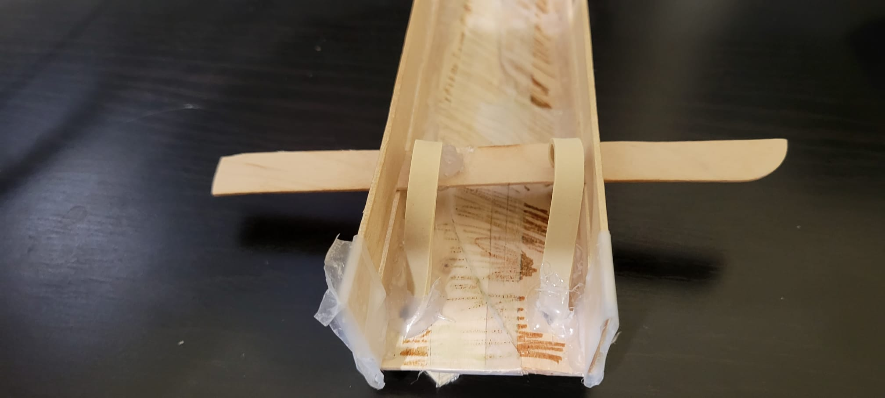
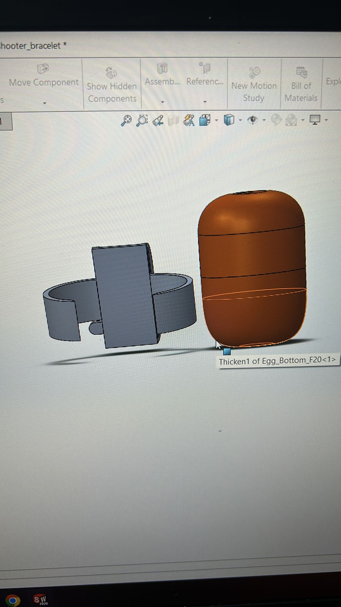
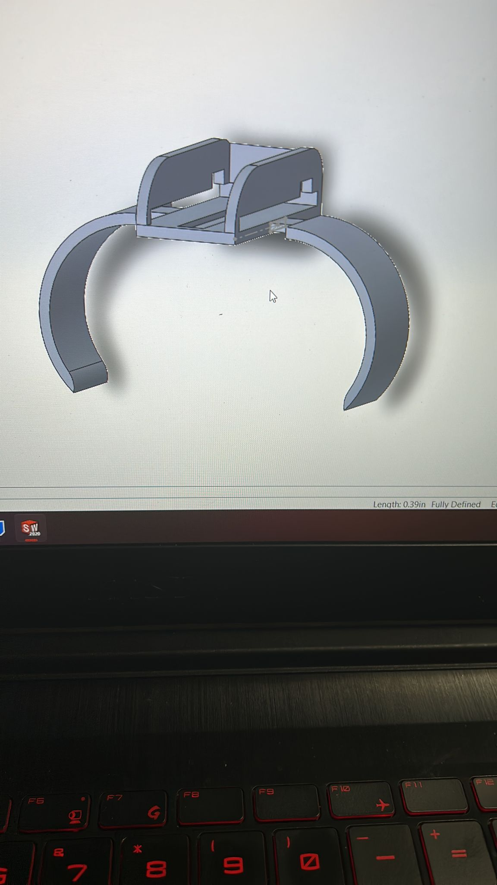
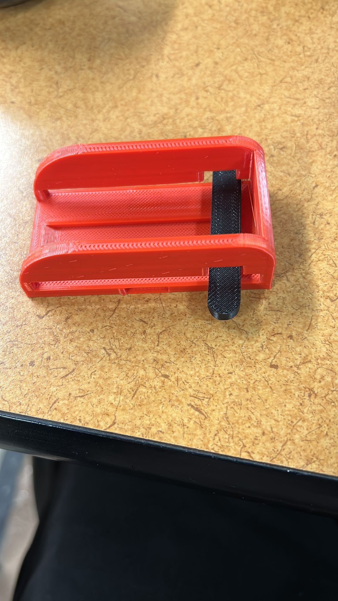
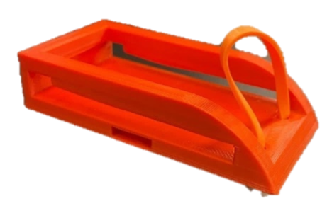
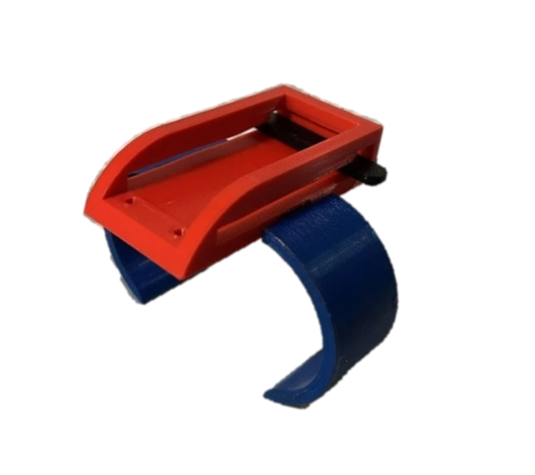
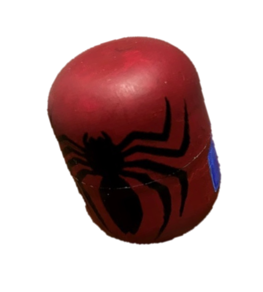

The goal of this project was to design an innovative toy inspired by Spiderman to be hidden inside a Kinder egg. My team aimed to create a fun, safe toy that could launch a projectile over 2.5 meters.
The final design was a bracelet-style web shooter that used elastic potential energy to shoot a web ball projectile. It was composed of two bracelet bands, a central launching mechanism, a trigger stick, and rubber bands. When the stick trigger is pressed down, it releases the tensioned rubber band and shoots the projectile forward.
I worked on various aspects of the project including conceptual design, prototype iteration, 3D modeling of components, developing instructions, and documentation. The toy's red and blue color scheme reflected Spiderman's iconic suit. Safety and ease of assembly were top priorities throughout the design process.
Multiple prototypes were tested to optimize the launching mechanism and projectile design. High-speed injection molding was proposed for mass production to minimize per unit costs. The toy retailed for $5.75 and a portion of profits supported children's charities
This project enhanced my technical skills in areas like design ideation, 3D printing, and prototyping. It also allowed me to gain experience with project management, team collaboration, and technical communication. Bringing a toy concept to life was a rewarding challenge.
Below illustrates the prototypes and process of making the toy.
      